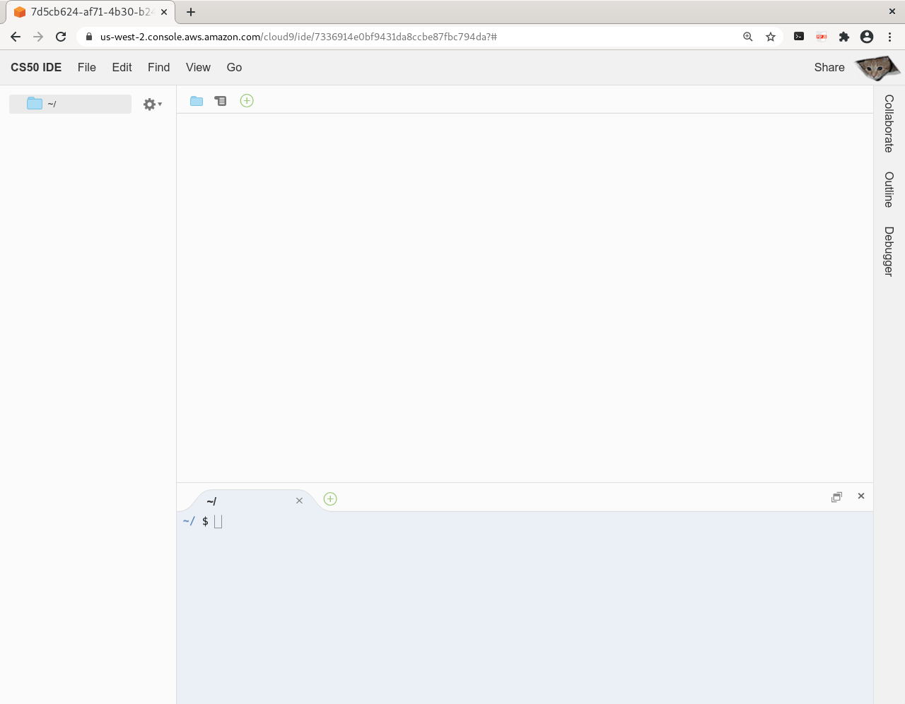

ide.cs50.io
Регистрация и вход в среду разработки.
Чтобы не устанавливать на домашний компьютер программное обеспечение, необходимое для выполнения заданий, мы будем пользоваться средой на облаке ide.cs50.io. Входить в эту среду мы будем через учёнтную записть на github.com. В видео ниже, вы можете посмотреть, как это сделать.
Создание и запуск первой программы на javascript
Ниже мы видим рабочую среду на ide.cs50.io.
В нижней части,находится окно терминала. Через него мы будем общаться с ядром операционной системы. Ядро операционной системы выполняет две функции. Первая функция - предоставление программам доступа к оборудованию, вторая - многозадачность. Используя язык sh в терминале мы будем создавать папки, запускать программы... Создадим паку с именем week1 в домашнем каталоге пользователя. Для этого выполните в окне терминала команду
~/$ mkdir ~/week0
~ - короткое обозначение домашнего каталога. Текущий каталог, или рабочий каталог - это каталог, в котором программа начинает поиск файлов, если не указан полный путь. Имя текущего каталога отображается справа от знкака $. Следующая команда сделает текущим каталогом каталок week0.
~/$ cd ~/week0
Напишем программу на javascript, которая при запуске выводит приветствие. В окне вверху справа, нажмите плюс и создайте файл. Сохраните его в папку week0 с именем hello.js. Наберите в файле
console.log("Привет, мир!")
Сохраните изменения, перейдите в окно терминала и выполните в нем команду
$node hello.js
node - это имя файла программы интерпретатора языка javascript. Эта программа найдёт созданный нами файл в текущем каталоге и выполнит его. Программа node наследует свойство, текущий каталог, от запускающего её терминала.